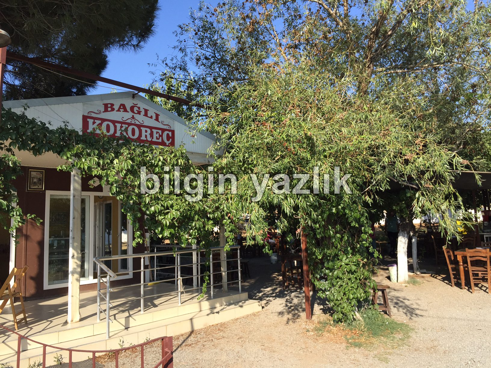
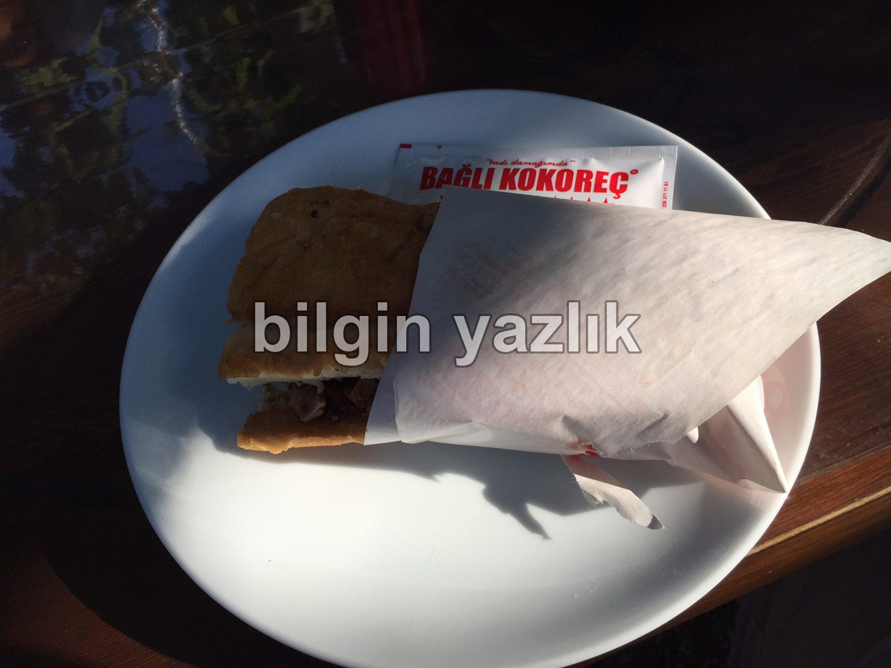
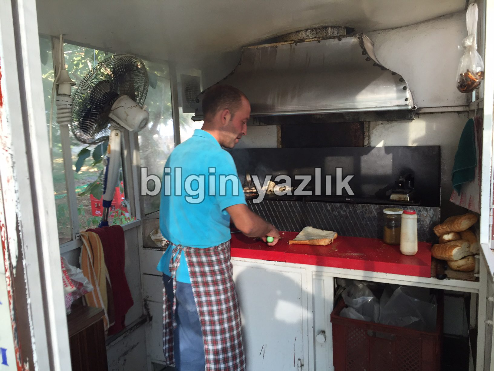

Van Gölü Havzası · 31 Ağustos 2016
Bağlı Kokoreç
Denizli’nin Tavas ilçesinde sanayi sitesinin içerisinde yer alan Bağlı Kokoreç’te yediğim kokoreçin tadı hala damağımda.
Taze kuzu bağırsağından yapılan kokoreç, sebzesiz olarak yapılıyor. Kokoreç ustası, kokoreçte sebze olmaz diyerek net bir tavır da takınıyor.
Çeyrek 5 TL, yarım 9 TL fiyatıyla satılan kokoreç için kullanılan ekmek de ne sert ne de çok yumuşak ve içi alınmış, dolayısı ile bir bütün olarak kokoreçi harikulade yapıyorlar.
Eğer müsait zamanda giderseniz bir de ekmek arası olmadan tabak ile servis isteyin, tadına doyamayacaksınız.
Bu mekan aynı zamanda Vedat Milor’dan 5 yıldız almış.



Bu yazı taliyol arşivinden taşınmıştır. · özgün kayıt